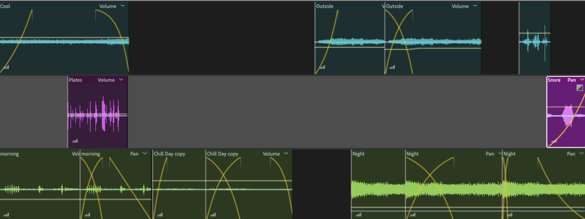
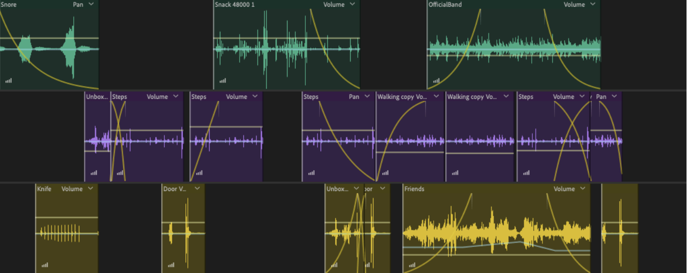

March 27, 2023
In this Soundscape project, I created a sound piece of a good day. Previously, in my working pieces, I had a lot of sounds. However, I decided to take out some sounds and blend some. This would make the scenes more focused and also allow me to add to the atmosphere by layering the sounds on top of each other.
For a good day, in my piece, I decided to add my own touch to it. My definition of a good day is whenever I wake up in the late afternoon naturally to the sound of my parents cooking in the kitchen. Hearing that sound, I trudge out as I'm often hungry when I wake up. After leaving my room to grab something to eat, I can hear my little brother watching the TV as he usually does as he wakes up before me. Later on, I transition to leaving the house to hang out with my friends. We often go out on walks or go to football games together, so there is a large outside sound. When we are done, it is often late at night, so I go back home and sleep. Despite the simplicity, this is my definition of a good day as I can relax and enjoy time with loved ones.
Through this project, I focused on layering the sounds in order to emphasize the points I want to emphasize and use the rest as atmosphere accessories. To do so, I utilized the noise deduction and simplify to control the volume. I mainly used fade-in and fade-out in order to create the right transitions and to make the sounds seem more chronological. Plus, I needed to use light and positive sounds in order to relay a good day, so as an effect, I couldn't use echo or other sounds that created distant or scary emotions. In my friend's voice, I added distortion in order to make the voices less defined. I also used Far Away Source in order to make specific layer sounds seem farther away than others. I also started and ended my piece with snoring as this creates a circular loop effect.   Return to Classes →